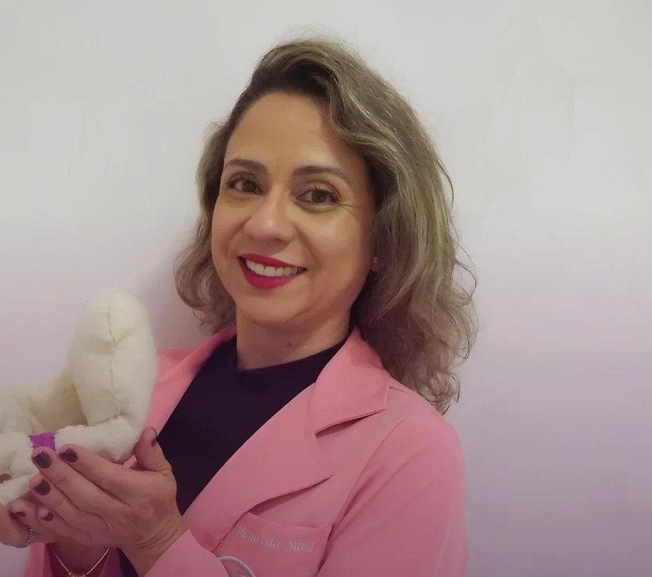
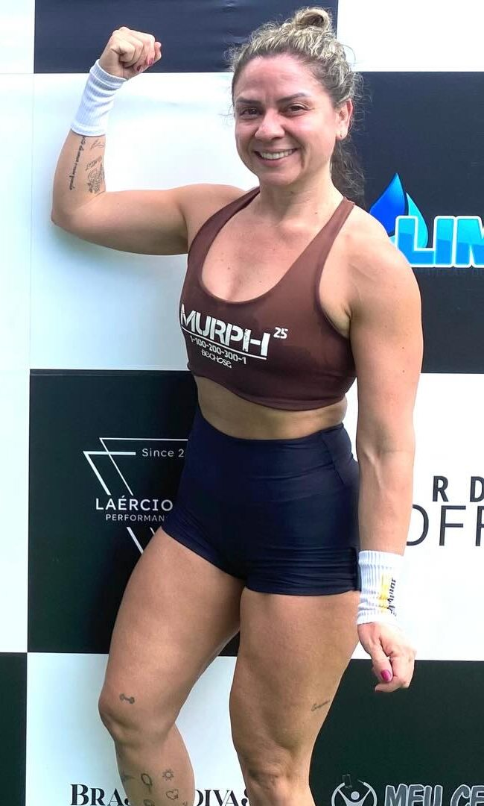
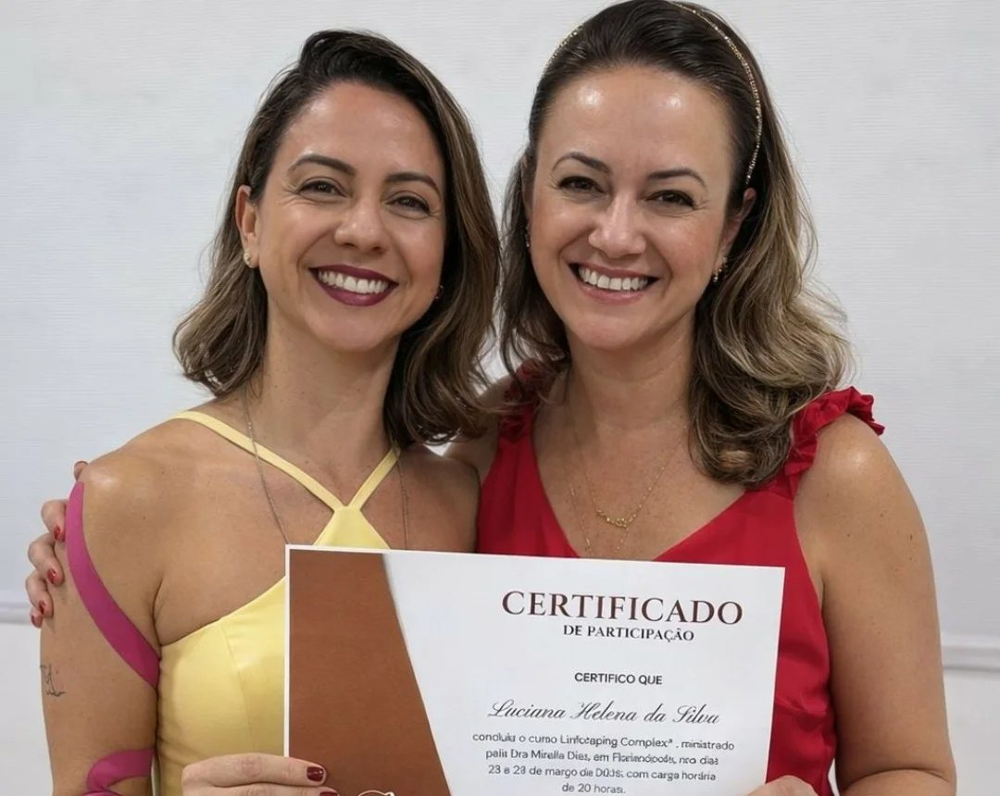
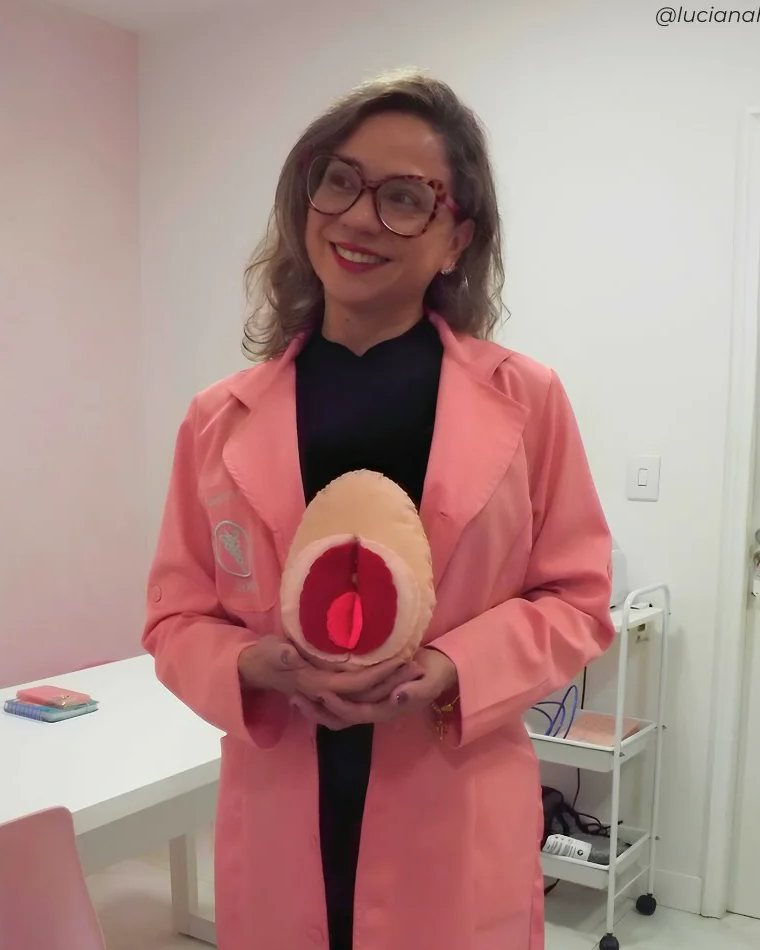

Cada corpo é único
Nada de protocolo de prateleira. O tratamento começa por entender a sua história, a sua rotina e o que o seu corpo está pedindo.
"cada corpo é único e a orientação profissional faz toda a diferença"Escape de urina, dor na relação, gestação, pós-parto e menopausa não são coisas que você precisa aceitar caladinha. Têm tratamento, e começa com uma conversa.

Toque no que você está vivendo. A mensagem já vai pronta para o WhatsApp da Luciana.
A cena pode ser engraçada no filme, mas na vida real, escape de urina não é motivo para rir, nem algo que você precisa aceitar.Luciana Helena
O Método LHP nasceu da prática diária no consultório. Ele parte de três ideias que a Luciana repete para as pacientes:
Nada de protocolo de prateleira. O tratamento começa por entender a sua história, a sua rotina e o que o seu corpo está pedindo.
"cada corpo é único e a orientação profissional faz toda a diferença"A pelve não está sozinha. Respiração, postura, treino, sono e autoestima entram na conversa, porque tudo isso mexe com a saúde íntima.
"olhar para a saúde da mulher de forma integral"Também não é motivo para ignorar o que o corpo está dizendo. Cada fase tem os seus cuidados, e você não precisa passar por elas sem entender.
"Envelhecer não é uma doença"
Entre um atendimento e outro, a Luciana está no box, na musculação ou no reformer. Por isso ela entende quem tem escape no meio do treino e quer continuar treinando.
O objetivo não é parar. É voltar a pular, correr, levantar peso e rir alto sem medo.
"Excelente profissional! Super animada, nos deixa muito confortável, tira todas as dúvidas também!"
"Excelente atendimento. Muito profissional e humano."
Espaço para mais relatos de pacientes. Quanto mais histórias reais aqui, mais fácil fica para a próxima mulher dar o primeiro passo.

Com a Dra. Mirella Dias, em Florianópolis. Buscar atualização constante faz parte do compromisso com cada paciente.

Outubro Rosa vai além da prevenção do câncer de mama. Também é cuidar da pelve.
A Luciana falou sobre fisioterapia pélvica na TV. No site, o vídeo fica aqui, direto na página, sem link quebrado.
A saúde do assoalho pélvico merece atenção em todas as idades.
Grandes aliados no tratamento, quando indicados corretamente.
Um momento de cuidado com o próprio corpo antes do parto.
Os primeiros sinais podem aparecer bem antes da última menstruação.
Um consultório acolhedor, pensado para você ficar à vontade.
Consultoria e atendimento por vídeo, para quem mora longe de Joinville.
Cuida dos músculos do assoalho pélvico, que sustentam bexiga, útero e intestino. Trata escape de urina, dor na relação, preparo para o parto, recuperação no pós-parto e mudanças da menopausa.
Sim. A Luciana acompanha a gestação, prepara o corpo para o parto e orienta técnicas como a massagem perineal, sempre respeitando cada fase.
Sim. Há consultoria e atendimento online, em português e em espanhol, para quem mora longe de Joinville ou fora do Brasil.
Na R. Jaraguá, 604, bairro América, em Joinville (SC).
Pelo WhatsApp (47) 99927-5413. Conte um pouco do que está sentindo e a Luciana responde com os horários disponíveis.
Uma mensagem já é o primeiro passo. Conte o que está acontecendo, sem vergonha, e a Luciana te explica o caminho.
Agende seu momento